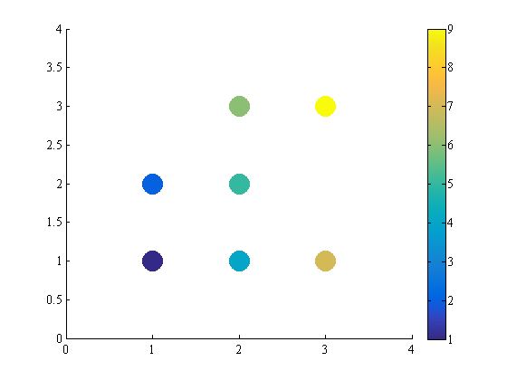
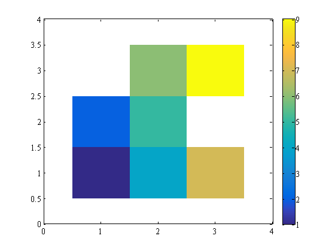

xyz2grid documentation
xyz2grid converts regularly-spaced columnated x,y,z data into gridded data.
Contents
Syntax
Z = xyz2grid(x,y,z) Z = xyz2grid(filename) Z = xyz2grid(filename,Name,Value) [X,Y,Z] = xyz2grid(...)
Description
Z = xyz2grid(x,y,z) assumes x and y have some form of regularity and puts the corresponding values of z into a regular 2D MxN gridded matrix Z.
Z = xyz2grid(filename) loads data from a .xyz file of three columns (x, y, and z) then puts the data into a grid. This function assumes the input x,y,z data have some gridded regularity, but may have some missing data points.
Z = xyz2grid(filename,Name,Value) opens a .xyz file with any textscan options Name,Value, for example, 'headerlines',1.
[X,Y,Z] = xyz2grid(...) returns 2D meshgridded X and Y matrices corresponding to the values in Z.
Example
You may have some columns of x,y, and z values that look like this:
x = [1 1 2 2 2 3 3];
y = [1 2 1 2 3 1 3];
z = [1 2 4 5 6 7 9];
scatter(x,y,500,z,'filled')
axis([0 4 0 4])
colorbar
 From the scatter plot above, you can see that there is some gridded regularity to the data, even though a couple of spots in the grid are missing. That's okay. Let's grid it up:
[X,Y,Z] = xyz2grid(x,y,z)
X =
1 2 3
1 2 3
1 2 3
Y =
3 3 3
2 2 2
1 1 1
Z =
NaN 6 9
2 5 NaN
1 4 7
You can see the two missing values are filled by NaN. You can plot the gridded data with surf(X,Y,Z) or pcolor(X,Y,Z), but let's use imagesc instead:
h = imagesc(X(1,:),Y(:,1),Z); axis xy axis([0 4 0 4]) set(h,'alphadata',~isnan(Z)) colorbar
Author Info
This script was written by Chad A. Greene of the University of Texas at Austin's Institute for Geophysics (UTIG), April 2016. http://www.chadagreene.com